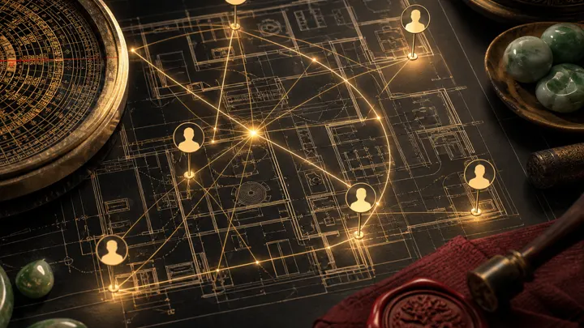
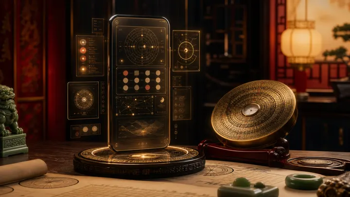
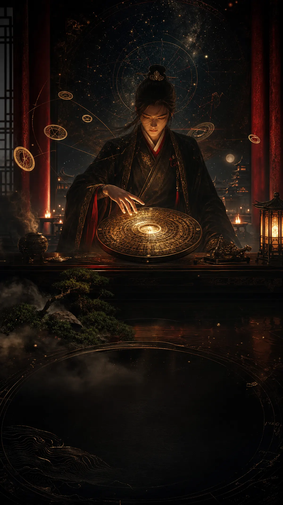

เริ่มจากเรื่องที่ต้องตัดสินใจ
หน้าแรกควรพาคนไปถึงคำตอบเร็ว ไม่ต้องให้เขาเดาว่าควรกดเมนูไหนก่อน
ถาม AI Sifu
ถามเรื่องงาน เงิน ความรัก สุขภาพ หรือจังหวะชีวิตจากดวงจริง
ดูวันนี้
เช็กพลังวัน ชั่วโมงดี กิจที่เหมาะ และเรื่องที่ควรเลี่ยง
วางฤกษ์
เลือกวันเปิดร้าน เซ็นสัญญา ย้ายบ้าน เริ่มโปรเจกต์
หล่อแก
อ่านทิศ บ้าน ห้อง ประตู โต๊ะ เตียง และจุดพลังในพื้นที่จริง

Networkคนรอบตัว
ดูใครหนุน ใครชน ใครเหมาะร่วมงานจากธาตุและดวงสัมพันธ์
คำถามเดียว ไม่ควรได้คำตอบลอย ๆ
ทิศที่วัดได้ตกมุมไหน ภูเขาอะไร และสัมพันธ์กับดวงเจ้าของบ้านอย่างไร
ไม่ตอบว่า “ดี” หรือ “เสีย” แบบเหมารวม แต่บอกว่าดาว/ธาตุไหนช่วย และจุดไหนต้องแก้
บอกโทน สี วัสดุ การใช้งาน และเงื่อนไขที่ต้องมี เช่น ฤกษ์หรือจุดที่ไม่ควรทุบ
ไม่ใช่แค่ chatbot ดูดวง
Hourkey ต้องขายความรู้สึกพรีเมียม แต่ความน่าเชื่อถือต้องมาจากข้อมูลที่ระบบคำนวณส่งเข้าไปจริง

สี่เสา Day Master, Useful God, โครงสร้าง, วัยจร และปีจร
คำถามเฉพาะหน้า ทิศ จังหวะ ประตู ดาว เทพ และสัญญาณวัง
องศา 24山, ดาวเหิน, วงแหวนหล่อแก, ทิศบ้าน และ pin บนแปลน
ฤกษ์ วัน ชั่วโมง กิจที่เหมาะ และข้อควรเลี่ยงตามบริบทผู้ใช้

หน้า landing ควรรู้สึกเหมือนกำลังเปิดประตูเข้าห้องอ่านดวง
เปิดดวงให้เป็นคำตอบ
เวอร์ชันนี้ยังเป็นหน้าแยกสำหรับทดลอง mood, asset, และ flow ก่อนตัดสินใจสลับกับหน้า landing เดิม